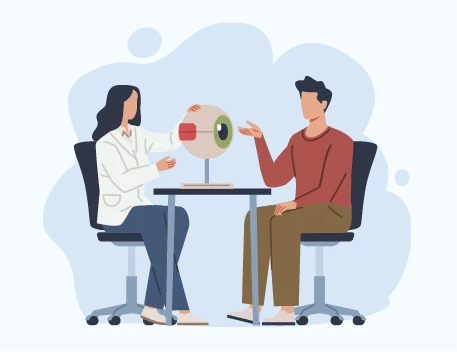

녹내장은 시신경이 점진적으로 약해져 방치하면 시신경 손상이 지속하는 진행성 시신경 병증이다. 시신경 손상 정도에 따라 실명에 이를 수 있어 대한민국 3대 실명 질환으로 불린다.
한국인 녹내장 발병 현황을 확인하기 위해 진행한 대표적인 역학조사로 충청남도 금산군 남일면 주민 1,500여 명을 대상으로 한 ‘남일 스터디’가 있다. 조사 결과 정상 안압 녹내장의 유병률은 2.5%였고, 안압이 높아져 발생하는 원발 개방각 녹내장의 유병률은 0.8%에 그쳤다. 서양권에서는 고안압 녹내장 유병률이 높은 편이나, 한국에서는 정상 안압 녹내장 환자의 비율이 전체 개방각 녹내장 환자의 77%에 달한다.
흔히 21mmHg 이하의 안압을 정상 범위라고 하고, 정상 안압 녹내장은 치료 전 안압이 정상 범위이면서 다른 동반 이상 없이 생기는 녹내장을 지칭한다. 발생기전이 아직 확실하지는 않지만, 안압에 의한 영향과 시신경 혈류 공급의 이상이 가장 중요한 역할을 하는 것으로 보인다.
젊은 층의 정상 안압 녹내장 진단 늘어
최근 20대부터 40대 사이의 정상 안압 녹내장 환자가 많이 보고되는 추세다. 녹내장 환자의 절대적인 수가 늘었다기보다, 과거보다 안과 검진을 받는 인구가 많아지면서 진단 나이대가 앞당겨진 것이다. 시력교정수술 전 검사 과정에서 시신경 이상이 발견되거나, 20~30대 직장인 건강검진에서 안압 검사나 시신경 촬영을 통해 별다른 증상 없이 조기에 발견하는 경우가 늘고 있다.
기존 안압보다 20~30% 하강을 목표로 치료
정상 안압 녹내장은 안압이 정상 범위임에도 시신경이 상대적으로 약해 그 안압을 버티지 못하고 손상이 발생했다는 개념으로 이해해야 한다. 따라서 치료 전 안압보다 대체로 20~30%가량의 안압 하강을 목표로 치료 계획을 세운다. 최초 치료 시 가장 우선으로 진행하는 방법은 안압하강제 안약 점안이며, 약 부작용이 있거나 안약으로 충분히 조절되지 않으면 레이저 시술이나 녹내장 수술 등 맞춤형 치료 방법을 모색해야 한다.
증상이 없을 때부터 정기 검진을
녹내장은 시신경 손상이 말기 수준으로 진행돼서야 시력 저하를 감지하는 경우가 많고, 초기와 중기에는 자각 증상이 거의 없다. 일단 손상된 시신경은 회복되지 않으므로, 치료의 목적은 현재 상태에서 더 나빠지지 않게 유지하는 것이다. 증상이 없는 상태에서도 경각심을 갖고 정기 검진을 통해 조기에 발견해 치료받는 것이 가장 중요하다.
이 칼럼은 ‘중앙일보 헬스미디어’ 2022년 8월 1일에 소개된 본원 김미진 원장의 전문가 칼럼을 정리한 것입니다.